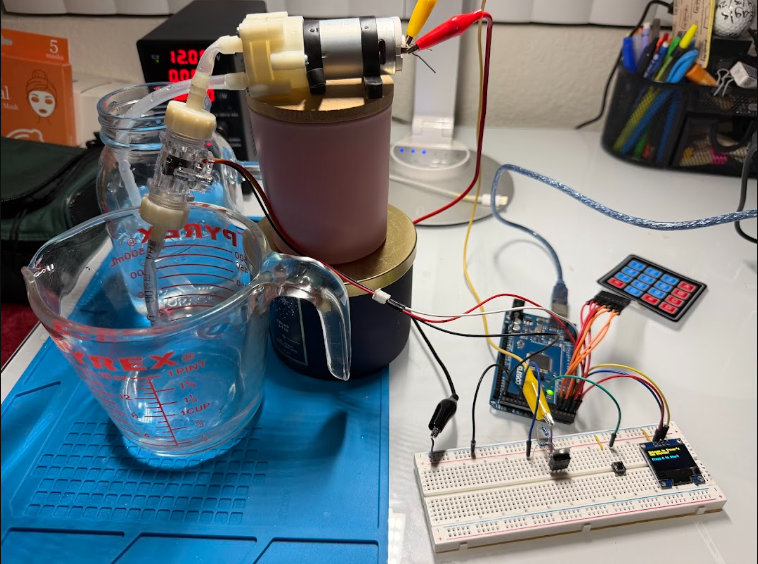
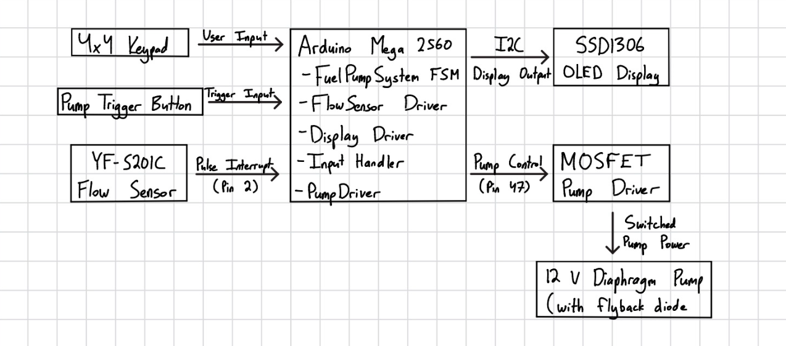
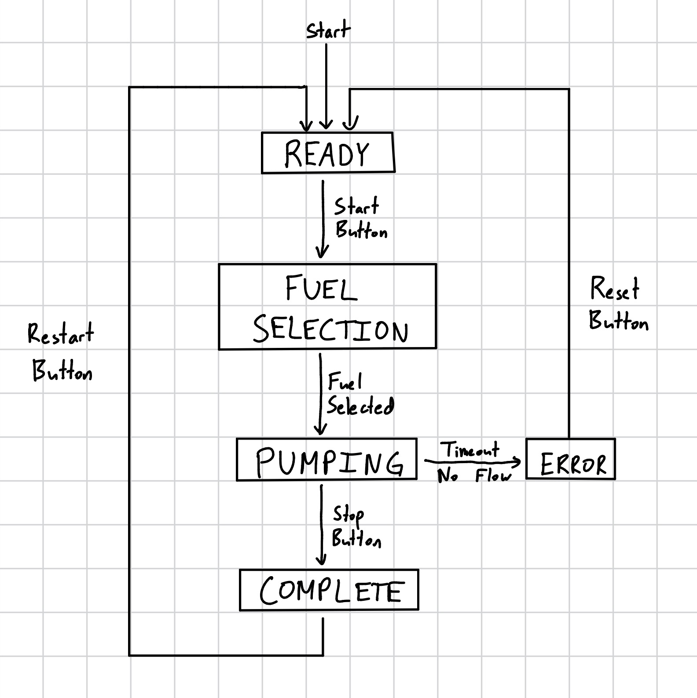

Electrical & Computer Engineering Student

This project is an embedded fuel pump simulation system designed to model the core behavior of an automated fuel dispensing system. It uses an Arduino Mega 2560 as the main controller, with a keypad for fuel selection, an OLED display for user feedback, a flow sensor for measuring dispensed fluid, and a MOSFET-controlled diaphragm pump for fuel delivery simulation.
The firmware is organized around a finite state machine with separate states for readiness, fuel selection, active pumping, transaction completion, and error handling. This structure keeps the control logic clear while allowing the system to respond to user input, sensor feedback, and fault conditions in real time.
To make the project more modular and closer to professional embedded firmware design, the system separates major hardware responsibilities into dedicated driver-style classes, including input handling, display output, flow sensing, and pump control. The flow sensor uses interrupt-driven pulse counting with ISR-safe atomic access, while the pump driver manages MOSFET-based switching and pump state tracking.
Safety and reliability features were also included, such as pump timeout protection, flow fault detection, and an ERROR state that disables the pump when abnormal conditions are detected. These features demonstrate practical embedded systems concepts such as real-time control, hardware/software integration, fault recovery, and sensor calibration.
The flow sensor uses interrupt-driven pulse counting to measure dispensed fluid in real time. Because the pulse counter is shared between the interrupt service routine and the main application loop, directly reading the value could result in inconsistent data access. To solve this, the firmware uses atomic access protection when reading shared pulse data, ensuring reliable and accurate fuel measurement.
As the project grew in complexity, the firmware was reorganized into
dedicated hardware abstraction modules including FlowSensor,
PumpDriver, InputHandler, and Display.
This improved code organization, simplified debugging, and made the system
easier to maintain and expand.
Several safety features were implemented to improve system reliability. Pump timeout protection automatically disables the pump if runtime exceeds a maximum limit, while flow fault detection monitors whether the pump is active without corresponding sensor pulses. These protections help detect abnormal conditions such as disconnected sensors, clogged tubing, or dry-running pump behavior.
The firmware was designed using a finite state machine architecture with non-blocking system behavior, allowing the application to continuously monitor user input, pump state, flow sensor data, and fault conditions in real time. This approach improves responsiveness and more closely reflects professional embedded systems design practices.

